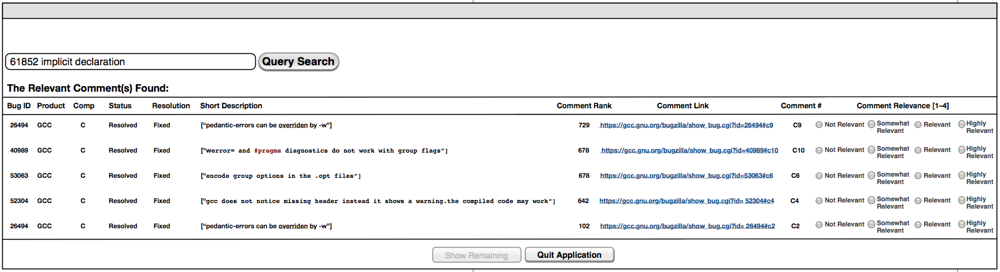

Recommending Bug-fixing Comments in Support of Bug Repair
Project Description. In practice, developers search for related earlier bugs and their associated discussion threads when faced with a new bug to repair. Typically, these discussion threads consist of comments and even bug-fixing comments intended to capture clues for facilitating the investigation and root cause of a new bug report. Over time, these discussions can become extensively lengthy and difficult to understand. Inevitably, these discussion threads lead to instances where bug-fixing comments intermingle with seemingly-unrelated comments. This task, however, poses further challenges when dealing with high volumes of bug reports. Large software systems are plagued by thousands of bug reports daily. Hence, it becomes time-consuming to investigate these bug reports efficiently. To address this gap, this paper builds a ranked-based automated tool that we refer it to as RetroRank. Specifically, RetroRank recommends bug-fixing comments from issue tracking discussion threads in the context of user query relevance, the use of positive language, and semantic relevance among comments. By using a combination of Vector Space Model (VSM), Sentiment Analysis (SA), and the TextRank Model (TR) we show how that past fixed bugs and their associated bug-fixing comments with relatively positive sentiments can semantically connect to investigate the root cause of a new bug. We evaluated our approach via a synthetic study and a user study. Results indicate that RetroRank significantly improved performance when compared to the baseline VSM.
